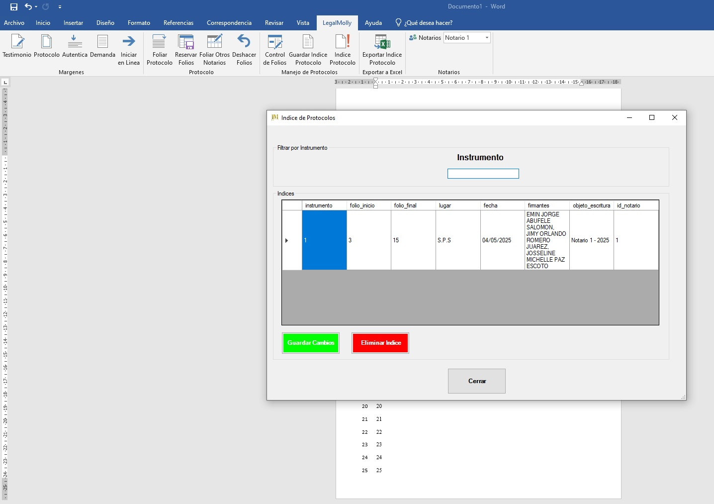

Instrumentos listos en 5 segundos
Cada vez que registras un instrumento, LegalMolly captura la información y la guarda en el índice en alrededor de 5 segundos. Olvídate de invertir minutos tecleando los datos del protocolo de forma manual.
Sistema de gestión para notarios que optimiza el foliado, formato y administración de protocolos, manteniendo la confidencialidad de cada expediente. Diseñado para notarios hondureños.
Automatizamos cada instrumento en segundos y sumamos IA para generar escrituras en minutos.
Cada vez que registras un instrumento, LegalMolly captura la información y la guarda en el índice en alrededor de 5 segundos. Olvídate de invertir minutos tecleando los datos del protocolo de forma manual.
Consulta el índice acumulado del año con todos los instrumentos y llévalo a Excel cuando lo necesites. Es la misma estructura que usas a diario, solo que ahora actualizada automáticamente.
Nuestra IA te ayuda a redactar escrituras en minutos, permitiéndote enfocarte en los detalles legales mientras delegas la escritura inicial.

Exporta a Excel en un clic cuando estés listo para entregar el índice.LegalMolly revoluciona la gestión documental notarial con herramientas diseñadas específicamente para notarios hondureños.
Numera automáticamente las páginas impares de tus protocolos, evitando errores manuales y ahorrando tiempo valioso.
Administra eficientemente tus protocolos con control de folios, reservas e índices generados automáticamente.
Aplica formatos predefinidos para testimonios, auténticas, demandas y protocolos con un solo clic.
Gestiona documentos para múltiples notarios desde una sola plataforma, con control independiente de folios y protocolos.
Genera y exporta índices de protocolo en formato Excel con toda la información organizada y estructurada.
Trabaja directamente desde Microsoft Word con una interfaz intuitiva y familiar para todos los usuarios.
LegalMolly funciona como un complemento de Microsoft Word, permitiéndote trabajar en un entorno familiar mientras automatizas tus procesos notariales.
No necesitas aprender nuevos programas - todo el poder de LegalMolly está disponible directamente en Word.
LegalMolly no es solo para notarios. Genera auténticas con formato legal en segundos.
Desde Word, elige “Auténtica” y el formato se aplica al instante.
Formato estructurado conforme al estilo de autenticación en Honduras.
Perfecto para abogados independientes o equipos jurídicos que necesitan rapidez y formalidad.
Optimiza tus procesos notariales y aumenta la productividad con LegalMolly.
Reduce hasta un 70% el tiempo dedicado a tareas manuales como foliación y formateo de documentos.
Evita errores comunes en la numeración de folios y en la generación de índices de protocolo.
Aumenta el número de documentos que puedes procesar diariamente gracias a la automatización.
Asegura que todos tus documentos cumplan con los formatos y requisitos legales vigentes.

LegalMolly transforma la eficiencia de tu notaría con resultados medibles
Reducción en tiempo de foliado y formateo
Menos errores en numeración de folios
Ahorro en consumo de papel
Controla cada instrumento dentro de tu propio entorno, protege la información sensible y demuestra cumplimiento ante auditorías sin complicaciones.
LegalMolly se ejecuta dentro de Microsoft Word, de modo que tus protocolos permanecen en tus propios servidores o computadoras. Nada sale de tu oficina sin que tú lo decidas.
Aplicamos buenas prácticas notariales con procesos claros y consistentes. Respaldos locales y archivos cifrables permiten atender cualquier requerimiento de autoridad con confianza.
Tu índice se exporta a Excel en segundos, conservando históricos para demostrar fechas, folios y firmas cuando sea necesario. Todo permanece organizado para tu tranquilidad.
Descubre cómo LegalMolly simplifica tu flujo de trabajo notarial
Estamos listos para resolver tus dudas y ayudarte a implementar LegalMolly en tu notaría
Jaciel Hernández
+504 9872-0406
info@macawsuite.com
Lunes a Viernes, 8:00 AM - 5:00 PM